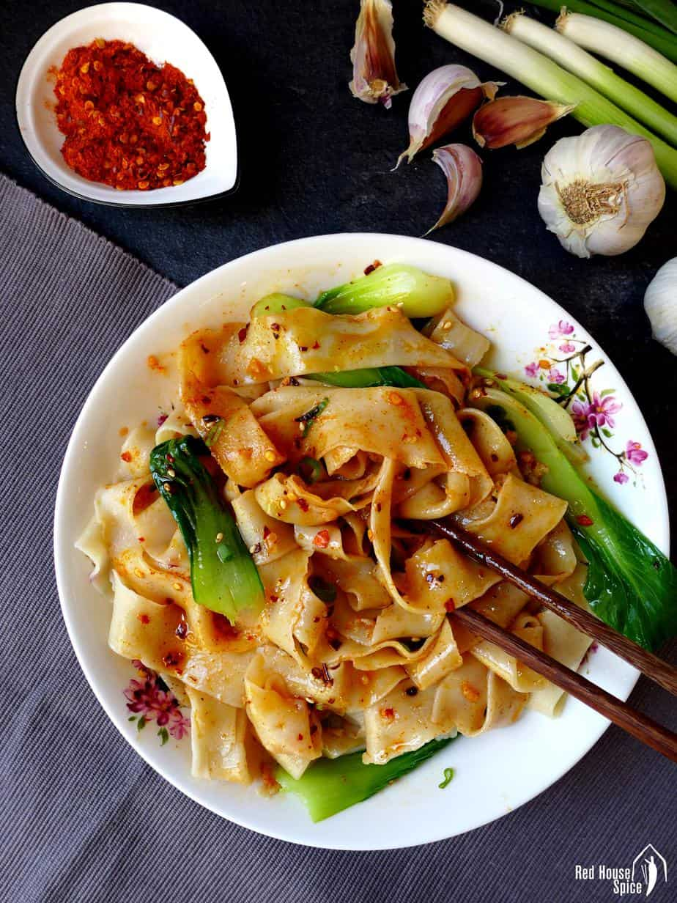

SLAP NOODS
Thick, broad, hand-pulled noodles seasoned with chilli, garlic and Sichuan pepper, Xi’an Biang Biang noodles offer a delectable taste and texture.

Biang Biang noodles refer to wheat flour noodles that are hand-pulled to a long, thick and broad shape (can be as wide as a belt). They have a chewy texture and are often served with a pungent, spicy dressing. Not only is this dish famous for its delectable taste and texture, it’s also renowned for the special character used in its name.
Alright ya been hit wit da knowledge, lesgetit!
INGREDIENTS
For the noods
- 250 g all-purpose flour About two cups
- 125 ml water
- ¼ teaspoon salt
- cooking oil To coat the dough
For the seasoning
- 3 tablespoon cooking oil
- 1 tablespoon scallions thinly sliced
- 2 teaspoon garlic minced (duuh)
- chilli flakes
- chilli powder
- ¼ teaspoon ground Sichuan pepper
- Salt
- 2 teaspoon light soy sauce
- 1 tablespoon black rice vinegar
INSTRUCTIONS
- Mix flour, water and salt by hand (or a stand mixer with a dough hook). Knead until well combined and very smooth (See note 2).
- Divide the dough into 8 equal pieces. Knead each one again and roll it into a gherkin shape.
- Thoroughly coat each dough piece with oil then place them on a plate (or in a container). Cover with cling film then leave to rest for 1 hour (See note 3).
- Heat up a pot of water. While waiting, flatten each dough piece into a rectangle shape with a rolling pin.
- Press the dough in the middle lengthways using a rolling pin or a chopstick.
- Hold each end of the dough and pull gently until it stretches to your preferred thickness.
- Put the noodle on a surface. Break it apart from the middle line to make a loop.
- Put the noodle into the boiling water. Repeat the procedure to pull other noodles. Cook four noodles at a time (It takes about 1 minute to cook through) then place in a serving plate (bowl).
THE FUN PART
- Place scallions, garlic, chilli flakes, chilli powder, Sichuan pepper and salt on top of the noodles.
- Heat up the oil. When it starts to smoke, pour it over the scallion, garlic, etc.
- Add soy sauce and vinegar. Stir to coat the noodles evenly.